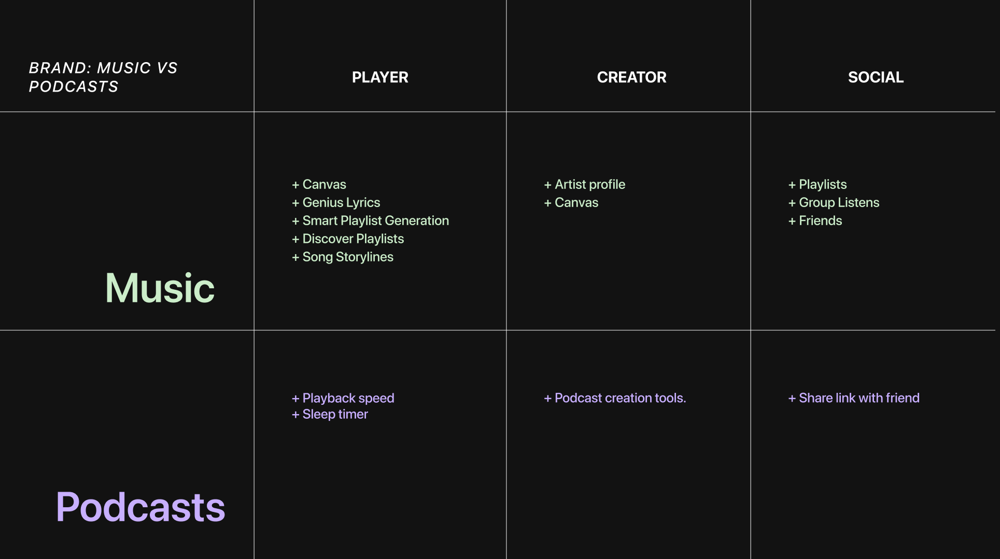

Defining the Audience
For the purpose of narrowing down our target audience, we separated podcast listeners into active and passive listeners. Spotify’s audio player is not yet geared towards podcast consumption as it lacks podcast specific features found in other specialized apps. Despite this, passive podcast listeners enjoy having access to podcasts in a convenient spot. However, engaged podcast listeners have more needs while consuming their content, leaving them no choice but to turn to other services.
1 / 3
Spotify's offering for podcast listeners
2 / 3
Passive podcast listener's experience
3 / 3
Enganged podcast listener's experience
❮
❯
For the purpose of narrowing down our target audience, we separated podcast listeners into active and passive listeners. Spotify’s audio player is not yet geared towards podcast consumption as it lacks podcast specific features found in other specialized apps. Despite this, passive podcast listeners enjoy having access to podcasts in a convenient spot. However, engaged podcast listeners have more needs while consuming their content, leaving them no choice but to turn to other services.
1 / 2

Spotify's music offerings vs podcast offerings
2 / 2
Opportunities for podcast side
❮
❯
Brand Values
Music for Everyone
Spotify is the leading music streaming platform, and for good reason. Their interface is designed with thoughtful innovation and is supported by powerful algorithms, rendering the music consumption experience completely seamless. Their brand is further defined by their brand values of:
Collaborative
Spotify emphasizes that "We're all Spotify" which includes creators, consumers, and everyone in between.
Personal
Spotify's tailored playlists and intimate copywriting create a personalized experience for each and every user.
Innovative
Spotify is quick to adapt to new technologies, trends, and even memes.
Implementing Spotify's Brand Values
It was important for our designs to strictly align with Spotify's core brand values because they were being implemented directly in the same application. We found a large discrepancy in both the quantity and quality of features between the music and podcast sides of Spotify, which extended to both consumption and creation. The resulting experience was problematic because many podcast listeners opted to use other podcast focused apps despite listening to music on Spotify, especially those who sought after value added features that Spotify lacked. We saw the opportunity to discover how Spotify could bridge the gap between
Subtle Social Qualities
Spotify is social, but not in the traditionally loud Web 2.0 format. Spotify is first and foremost an audio player, and they fulfill that role extremely well. The social elements that Spotify has integrated into the app are used to support listeners in their main goal of finding and enjoying music.
Friend activity and group session are social features that sit on the sidelines; users have the option of completely ignoring them with no interruption to the flow of their regular use. However, for those who appreciate the benefits of discovery and directed listening, these features are there to support their needs. Additionally, businesses have created their own form of social content on Spotify by creating playlists that suit their brand.
The main takeaway from this is that social features should ultimately support the listener’s main goal when using Spotify while remaining unobtrusive to the basic user flow.